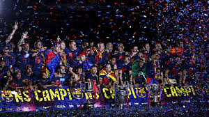
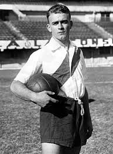
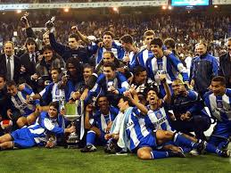
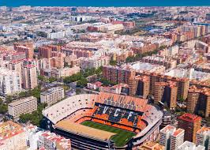
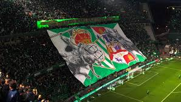
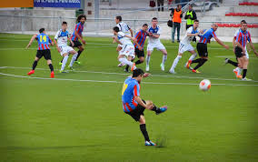
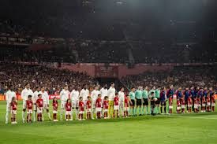

📸 Momentos Inolvidables: Galería de Imágenes de LaLiga
Una colección masiva de fotografías que capturan la emoción, los goles y las celebraciones históricas del fútbol español.
Fotografías de Época y Héroes Modernos

El Arte en el Aire: Goles de Fantasía.

Euforia en El Clásico.
El Abrazo Colchonero (2021).

Di Stéfano: La Primera Leyenda.

La Gestas del Súper Dépor.

La Catedral de Mestalla.

Pasión en el Derby Andaluz.
La Real Sociedad en 1982.

Táctica y Precisión.

El Trofeo Más Antiguo.